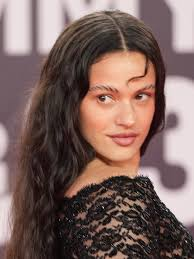

ROSALÍA

Las sesiones de grabación para la confección del tercer álbum de estudio de Rosalía comenzaron en 2019. Debido a circunstancias imprevistas de la pandemia de COVID-19, Rosalía se mudó a Miami, donde continuó trabajando en el álbum mientras también prestaba su voz a varias canciones. El 4 de septiembre de 2020, se lanzó un remix de «Relación» de Sech, que también presenta a Daddy Yankee, Farruko y J Balvin, lo que le valió a Rosalía su segunda entrada en el Billboard Hot 100, alcanzando el puesto 64. También participó en el tercer álbum de estudio en solitario de Bad Bunny, El último tour del mundo, en el tema «La noche de anoche», que luego se lanzó como sencillo el Día de San Valentín. La colaboración, realizada en Saturday Night Live, se convirtió en un gran éxito comercial, debutando en el número dos en la lista global de Spotify con 6,63 millones de reproducciones en un solo día, marcando el mayor debut de una canción íntegramente en español en la historia.67 También supuso el noveno mejor debut en la plataforma en 2020 y el segundo mayor debut en Spotify España en la historia de la música. Una semana después, colaboró junto a The Weeknd en el remix de «Blinding Lights» y, en enero, con Billie Eilish en «Lo vas a olvidar», que apareció en un episodio especial de Euphoria.< Más tarde también colaboraría con Oneohtrix Point Never y Tokischa en «Nothing's Special» y «Linda», respectivamente.68 El 2 de noviembre de 2021, Rosalía anunció el título de su nuevo álbum Motomami. Fue lanzado el 18 de marzo de 2022 a través de Columbia Records. La promoción antes del lanzamiento del álbum abarcó el lanzamiento de tres sencillos y los sencillos promocionales «Hentai» y «Candy». El sencillo principal «La fama», con The Weeknd, es una bachata experimental que tuvo un gran éxito comercial. Se convirtió en el séptimo sencillo número 1 de Rosalía en España, al mismo tiempo que alcanzó el quinto lugar en Francia y alcanzó el top 10 en otros ocho países. En diciembre del mismo año, Rockstar Games lanzó una nueva estación de radio Grand Theft Auto Online, Motomami Los Santos, curada por Rosalía y Arca. En febrero de 2022, Rosalía reveló la carátula del álbum de Motomami y lanzó «Saoko» como el segundo sencillo del álbum con gran éxito de crítica. El video musical que acompaña a la canción, dirigido por Valentin Petit, fue filmado en Kiev, principalmente en el puente Podilskyi. Por su edición realizada por Petit y Jon Echeveste, el video ganaría el MTV Video Music Award a la Mejor edición. El 24 de febrero, Rosalía lanzó «Chicken Teriyaki» como tercer sencillo del álbum.69 Tras su lanzamiento, Motomami recibió elogios universales de los críticos musicales, muchos de los cuales elogiaron la experimentación y los sonidos que doblan el género. Motomami recibió una puntuación perfecta de varias publicaciones, incluidas The Telegraph, The Independent y Variety, y Clash, Rolling Stone, Rockdelux, The Guardian, etc. le otorgaron cuatro estrellas o más. Se siente raro escuchar un disco tan experimental, que aspira a extenderse por los géneros y jugar con las formas, y que logra exactamente lo que se propone. Rosalía ya era una cantante formidable, pero aquí también suena como si hubiera aprendido que con el estrellato mundial viene la libertad de establecer su propia agenda». El álbum se ha convertido en el álbum mejor reseñado y más discutido de 2022 en Metacritic.70 Comercialmente, Motomami ingresó a 22 listas en 19 países y alcanzó los diez primeros en siete países, dos de ellos número 1. El álbum ingresó a las principales listas del mercado, alcanzando los cuarenta primeros tanto en la lista de álbumes del Reino Unido como en el Billboard 200. En Spotify, logró el mayor debut de un álbum en español de una artista femenina en la historia de la plataforma, con 16,3 millones de reproducciones en el primer día.71 En julio de 2022, Rosalía se embarcó en su segunda gira mundial de conciertos, Motomami World Tour, para promover aún más Motomami, con espectáculos en Europa, Sudamérica y Norteamérica. La lista de canciones incluía cuatro pistas inéditas, incluida «Despechá», que luego se lanzó el 28 de julio con éxito mundial. Rosalía participó posteriormente en los próximos proyectos de Romeo Santos, Niño de Elche y Wisin & Yandel.72 Rosalía durante su concierto gratuito en el Zócalo de la Ciudad de México en 2023. En la 23.ª entrega anual de los Premios Grammy Latinos en noviembre de 2022, Motomami ganó las cuatro categorías en las que fue nominado, que fueron Álbum del Año, Mejor álbum de música alternativa, Mejor álbum de ingeniería y Mejor diseño de empaque. Rosalía fue la primera mujer y el sexto acto en general en ganar Álbum del año dos veces como artista principal.73 También recibió dos nominaciones en la 65.ª edición de los Premios Grammy por Mejor álbum alternativo o rock latino y mejor película musical para Motomami Tiktok Live, ganando para la primera categoría. Sin embargo, medios como Rolling Stone, Pitchfork, el New York Times y W creía que la Academia de Grabación y los Grammy habían rechazado a Motomami en la categoría Álbum del año.74757677 A principios de 2023, Rosalía colaboró con Coca-Cola para crear un sabor de edición limitada bajo su marca 'Coca-Cola Creations' llamado 'Move', para el cual lanzó la canción «LLYLM».78 En marzo, la cantante se embarcó en una carrera de festivales como parte de su gira Motomami, que está programada para visitar una gran variedad de festivales, incluidos Coachella, Lollapalooza y Primavera Sound. En mayo de 2022, el cantante y pareja de Rosalía Rauw Alejandro le dijo a la revista Billboard que habían estado trabajando juntos en el estudio y tenían material para ser lanzado. Rosalía lo confirmó en su propia entrevista con la revista en noviembre.79 El proyecto se anunció el 13 de marzo del mismo año, con la portada, la lista de canciones y la fecha de lanzamiento publicadas en sus redes sociales. El EP titulado RR fue publicado el 24 de marzo con un sencillo, «Beso», y otras dos canciones, «Vampiros» y «Promesa». El videoclip de «Beso» finaliza con Rosalía revelando un anillo de diamante en su dedo, confirmando que ambos artistas se encuentran comprometidos.80 El 28 de abril, cerró su gira de festivales por el continente americano con un concierto gratuito en el Zócalo de la Ciudad de México, con una asistencia de 160.000 personas, convirtiéndose así en el concierto más multitudinario de su carrera.81
| Año | Título | Artista(s) | Rol |
|---|---|---|---|
| 2014 | «Saturno (Steve Lean Remix)» | Dano | Ella misma |
| 2019 | «Adore You» | Harry Styles | Narradora |
| 2020 | «WAP» | Megan Thee Stallion | Ella misma |